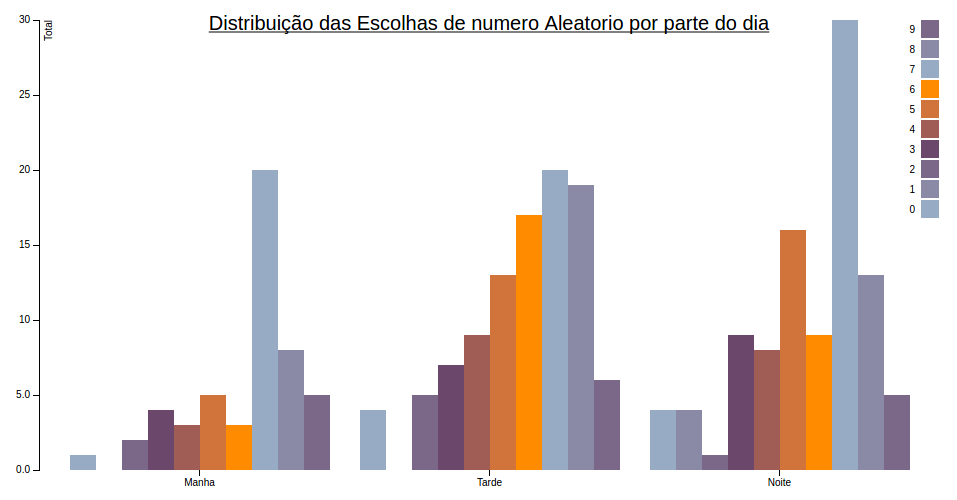

Nesta parte do laboratório foi incumbido aos alunos de Visualização de Dados melhorar os gráficos feitos por outros alunos, no laboratório passado.
Nesta visualização é possível ver a distribuição de números aleatórios de acordo com os turnos manhã, tarde e noite.
Com isso, propusemos melhorar a visualização transformando o histograma em linhas, para que pudéssemos sobrepor as linhas dos turnos, assim melhorando a comparação dos histogramas.